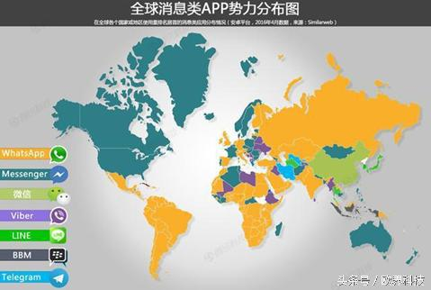
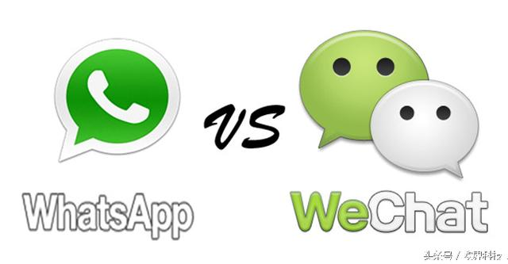

2016-09-03 06:30 点击数546325次
今早关于“钢铁侠”马斯克的Space X火箭在试飞前爆炸的消息火速刷屏，正在非洲尼日利亚进行考察的扎克伯格恐怕是听到这个消息后最难过的人了。Amos 6卫星作为扎克伯格给予厚望的Internet.org系列卫星中的第一颗，结果出师未捷身先死，伴随着Space X火箭的爆炸，一起消散不见了。卫星的炸毁生生打断了扎克伯格雄心计划的开始，让小扎的此次非洲之旅蒙上了一层阴影。
根据Facebook上个月公布的2016财年第二季度财报显示，目前facebook全球月活跃用户已经达到了17.1亿人，旗下WhatsApp、Messenger占据了美洲、非洲等大部分地区，而在国内广为人知的微信，虽然涨势喜人，保持着每年增加1.6亿活跃用户的增长速度，目前微信的月活跃量已经超过8亿。但相较于Facebook的庞大体量而言，微信更多的是依赖国内封闭的环境得以获得国内社交领域的制霸地位。

不想当将军的士兵不是好士兵，同样，不想国际化的企业不是大企业，微信虽然在国内与阿里打的火热，但马化腾从未放缓过微信全球化的步伐。微信在2011年初推出后，第二年4月份微信就开始了国际化道路，通过签约著名球星梅西等广告营销方式在南美和东南亚进行铺天盖地的宣传，然而社交应用的市场份额从来都是决定于一个地区大部分人群所共同习惯使用的社交软件，谁能抢得先手，谁就能拥有优势。可惜的是，微信在国际化的道路上仍是比facebook晚了一步。
但在非洲的社交市场上，据年初研究报告显示，微信在南非拥有600万用户，虽然低于WhatsApp的1400万用户，但差距并不明显，尤其是在非洲的其余国家，两者仍然处于同一水平线上。而此次扎克伯格面向非洲研发的Amos 6卫星却在其考察非洲市场之时炸毁了，导致Facebook的一系列计划就此搁浅，马化腾这次捡了个漏，想必会趁势加紧步伐，完成在非洲市场的布局。
2013年微信就和腾讯的老东家Naspers合作，在非洲推出Wechat，但却一直被WhatsApp压缩生存空间，而微信相较于WhatsApp而言，最大的优势就是集所有的生活服务与一体，便捷完成支付，而这样的消费习惯需要时间去培养用户的使用习惯，如今小扎卫星废掉了，对于腾讯而言，但真是瞌睡了就有人送枕头。对于马化腾而言，势必会抓住这个机会，更快的向非洲人群辐射，使微信服务的范围扩大化，增加自身产品的优势。

社交软件之争在于用户之争，微信输了先手，但凭借其一体化的服务未尝不能和WhatsApp一争高下，尤其是在自己老东家的本土范围内，占尽地利，此次马斯克又拖了扎克伯格的后腿，给了微信更多的发展时间。微信能否借此机会超越facebook一头，令人期待！